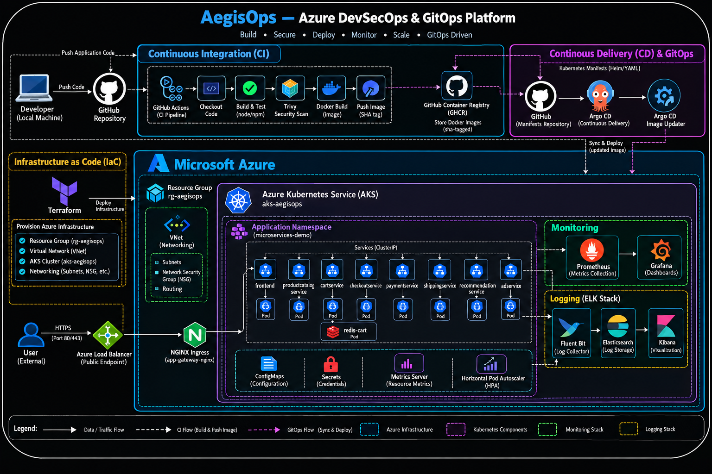

Continuous integration
GitHub Actions detects source changes, builds service images, runs Trivy image scanning and publishes versioned images to GitHub Container Registry.
An Azure-based DevSecOps and GitOps platform exploring how microservices move from source control to Kubernetes—with automated builds, image security checks, declarative delivery, autoscaling, metrics and centralized logs.
AegisOps brings delivery automation, runtime orchestration, observability and security checks into one end-to-end engineering story.
GitHub Actions detects source changes, builds service images, runs Trivy image scanning and publishes versioned images to GitHub Container Registry.
AKS hosts the microservices and supporting components, with Kubernetes Services, gateway routes, workload health and horizontal pod autoscaling.
Declarative manifests and Argo CD provide a visible path from repository changes to cluster resources, synchronization and rollout inspection.
Prometheus target health and Grafana dashboards make cluster and workload behavior easier to inspect during operation and troubleshooting.
Filebeat/Fluent Bit-style collection and Elasticsearch/Kibana evidence show Kubernetes metadata being indexed and queried for investigation.
The target design includes Terraform-managed Azure infrastructure, networking and AKS. The diagram documents the intended platform boundary.
This is the architecture diagram supplied for the project. Select it to inspect the full-resolution version.

A high-level view of the workflow demonstrated by the supplied GitHub Actions, registry, Argo CD and AKS evidence.
Explore the original screenshots captured during implementation. Filter by area or search for a tool, resource or workflow. Select any card to view it larger.
Key capabilities documented by the screenshots and project artifacts.
Use the AegisOps repository for the portfolio project and its supporting documentation. Screenshots are presented as implementation evidence, not as links to a different source repository.
Evidence images are grouped by the capability they demonstrate. The gallery shows captured implementation state.